Our building — look for the parking space
silver dust box in the parking space
**Silver dust box** in the parking lot
Registration number: M130056625
From Haneda Airport
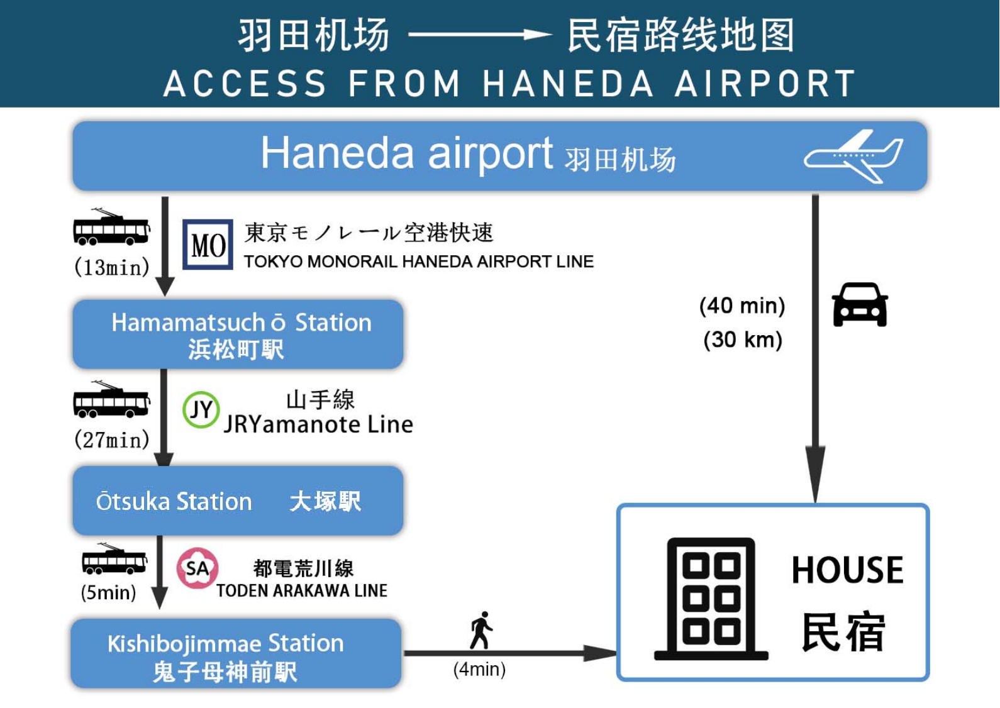
All routes are IC-card friendly (Suica/PASMO). For comfort and simplicity, a taxi from
Haneda is the easiest option.
Video Guide
Check-in /out Guide
You can enter by using the passcode
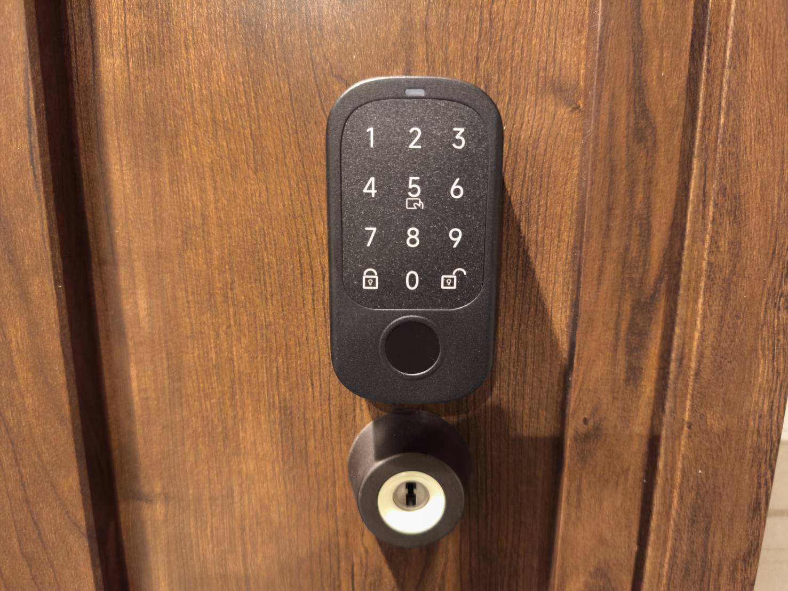
Enter passcode
Access Code
1122
Press the "Unlock" button at the bottom right
and Enter the building.
Please note down this access code before your trip in case you arrive late at night.
Check-in
Arrival from 16:00.
Use the Passcode for entering.
Note
Your check in time is 4pm. We can sometimes arrange an early check-in, so please contact us if you plan to
arrive early and we'll do our best to accomodate you (we can't promise, unfortunately.)
Check-out
Please leave by 10:00.
Turn off lights/AC/appliances and sort garbage into indoor bins.
close the door (make shure to lock before leaving).
Note
Check-out time is strictly 10am. If you require a later check-out, we’ll do our best to accommodate it. But
please bear in mind you’ll need to let us know beforehand.
BEFORE CHECK-OUT
Before your departure, we’d appreciate if you would
take care of the following:
Leave the beds unmade. No need to strip them.
Place used towels in the shower.
Empty all the trash (We will explain how to separate them later)
Move all furniture and items back to original locations.
Check air conditioners and other alliances are turned off.
Check all doors and windows to be sure that they are locked.
Appliance instructions
Wi-Fi info
There is 1 Wi-Fi network available in the house.
Wi-Fi Name (SSID): welcome Password: tokyo1234
The Wi-Fi information is also displayed on the cat Wi-Fi sign on the wall.
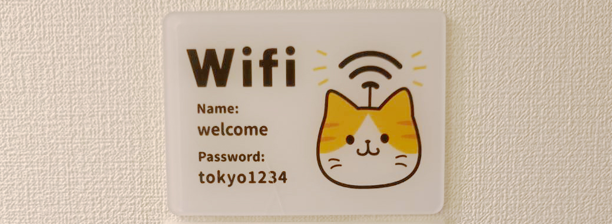
Wi-Fi info (located on the wall)
Television (TV) Instructions
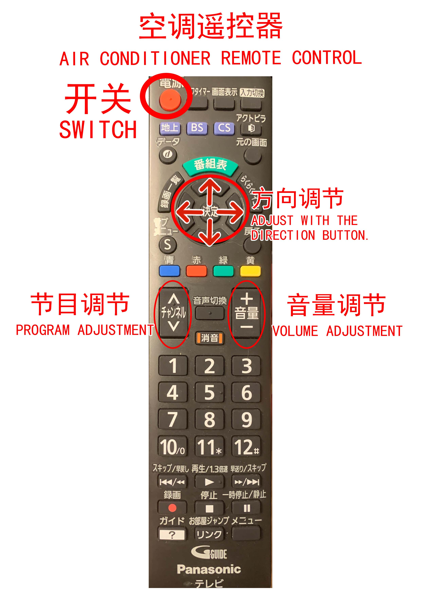
Power / Channel / Volume controls
Turn ON / OFF Press the red power button at the top of the remote.
Change channels Use the ▲ / ▼ buttons next to “チャンネル”.
Adjust volume Use the ＋ / － buttons next to “音量”.
Direction buttons Use the large center arrows (← ↑ → ↓) to navigate menus if needed.
📺 You may log in to streaming services with your own account if available. Please remember to log out before check-out.
💡 If the TV does not turn on, please make sure the power cable is connected and press the power button on the
TV itself.
Washing Machine (Auto Detergent)
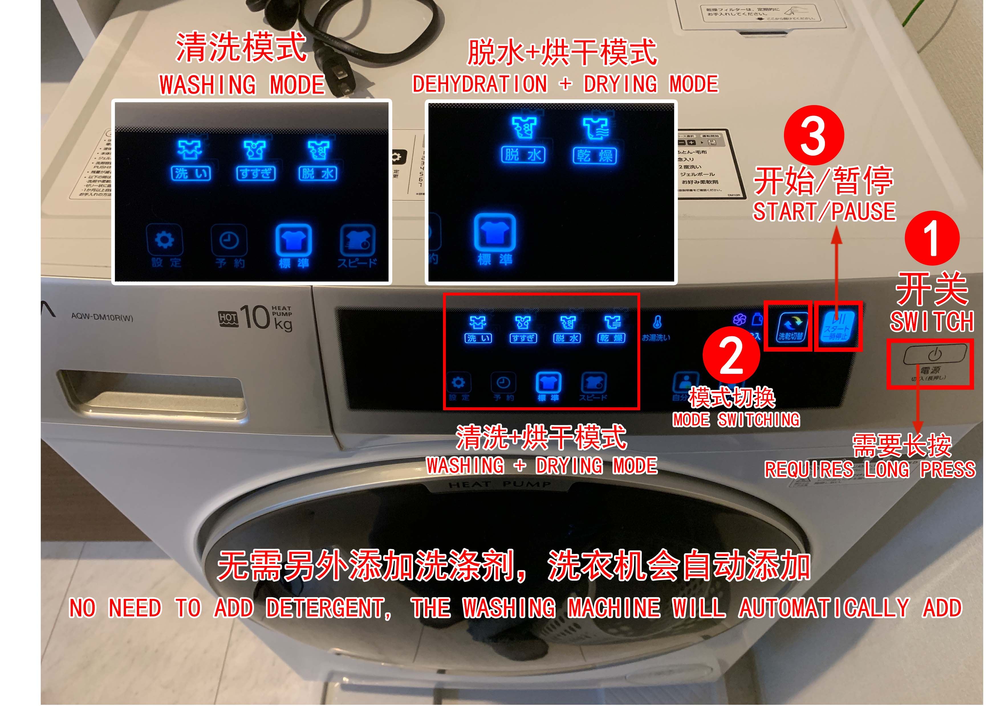
Power → Mode → Start
Open the door and place your laundry inside.
*Max capacity: 10 kg*
Press & hold the power button (①) to turn on.
Select mode using the mode button (②):
洗い — Wash only
すすぎ＋脱水 — Rinse & spin
脱水＋乾燥 — Spin & dry
洗濯＋乾燥 — Full wash & dry (recommended)
Once you have selected the mode, press START / PAUSE (③) to begin.
🧴 No need to add detergent.
The washing machine will automatically dispense detergent.
💡 *Drying may take longer depending on load size.*
⚠ *Please remove lint filter content if full, and do not overload the drum.*
Air Conditioner (AC)
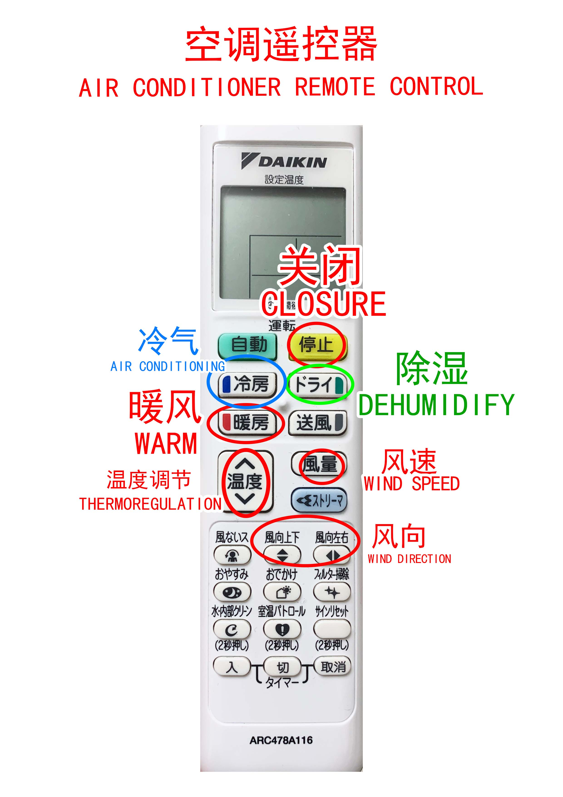
Example AC remote (your remote may look similar)
Power ON / OFF
Press the 運転 / 停止 or 停止 button (often yellow or red).
自動 – Auto (AC chooses the best mode automatically)
Set the temperature
Use the 温度 ▲ / ▼ buttons to adjust the temperature.
Recommended: 24–27 °C in summer, 20–23 °C in
winter.
Adjust fan speed
Press 風量 (Fan speed) to change the airflow strength.
Adjust wind direction
Use 風向 上下 / 左右 buttons to move the air up/down or left/right.
💡 Please close windows & doors while using the AC for better efficiency.
⚠ Always turn OFF the AC when you leave the room or the house.
Vacuum Cleaner
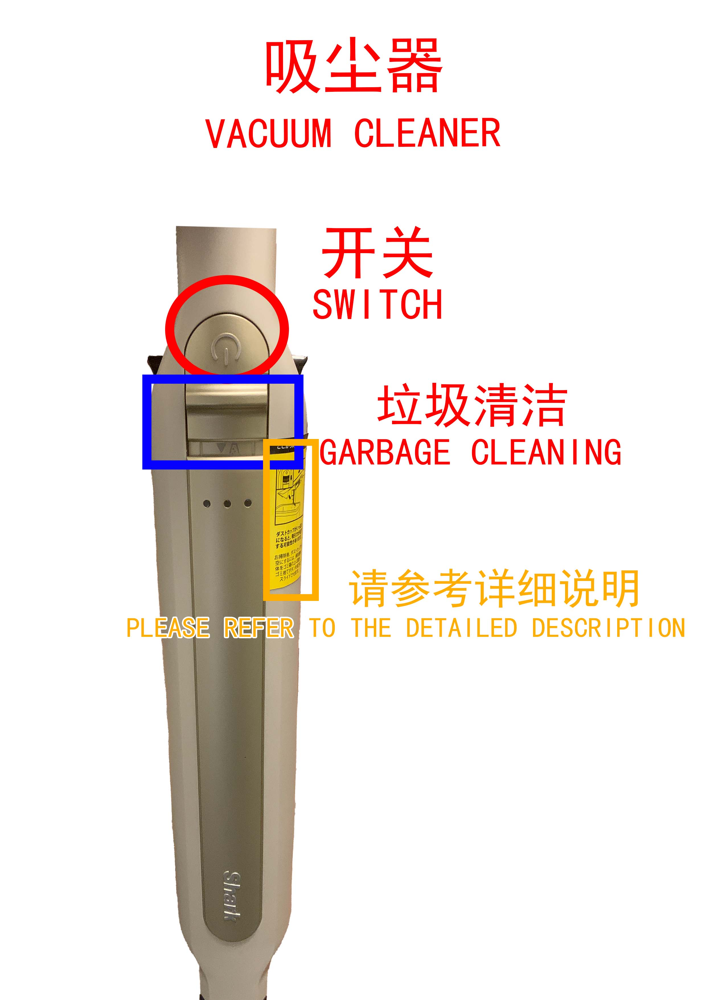
Power button (red circle) and dust container release (blue box)
Turn ON / OFF — Press the round power button at the top
(shown in the red circle).
Use — Gently push the vacuum over the floor or carpet.
Please avoid vacuuming water or very wet areas.
Empty the dust — After cleaning, make sure the vacuum is OFF,
then press the lever in the blue box to open the dust container and empty it into the
trash.
Close & return — Close the container firmly and place the vacuum back in its original
spot.
If the suction feels weak, please check and empty the dust container.
Microwave Oven (SHARP)
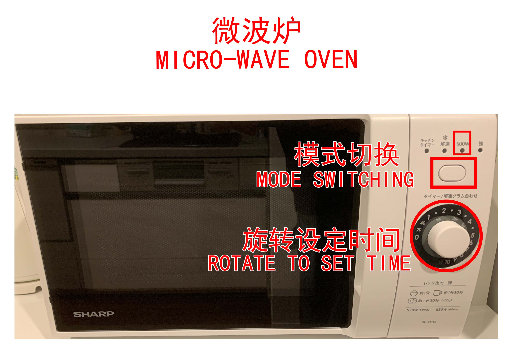
Mode switch (heating / defrost) and timer dial
Open the door and place your food or drink inside on the plate.
Choose the mode:
500W — Standard heating (recommended)
Defrost — Use for frozen food
Press the mode button (highlighted in the picture) to switch modes.
Rotate the timer dial to set the heating time.
*E.g. 1–2 min for warming drinks, 3–5 min for meals.
The microwave will start automatically** after turning the dial.
When the time is up, it will stop and make a sound. Carefully remove the food.
⚠ Please do not use metal containers, aluminum foil, or sealed containers inside the
microwave.
Use microwave-safe dishes only.
Rice Cooker (TIger IH)
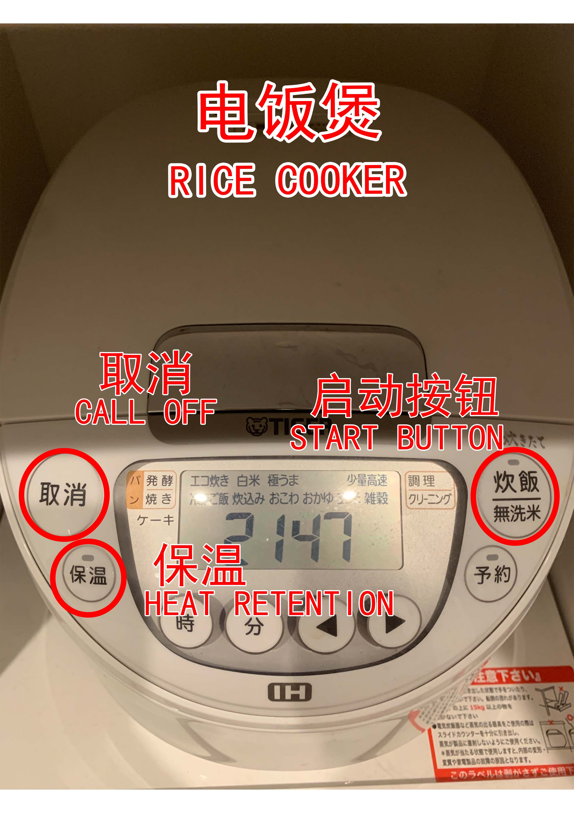
Start button (炊飯) and Cancel (取消) / Warm (保温)
Open the lid and take out the inner pot.
Put rice and water inside the pot.
Example: 1 cup of rice (180 ml) + water up to level “1”.
*This is for non-washed rice (無洗米).
Wipe the outside of the pot if it gets wet and place it back in the cooker.
Close the lid completely.
Press the “炊飯” (Start) button to begin cooking.
Cooking takes around 40–50 minutes. The cooker will automatically switch to
Warm mode (保温) when done.
After cooking:
Use the 保温 (Warm) button to keep rice warm if you plan to eat later.
Press 取消 (Cancel) to stop any process.
⚠ Please do not put the inner pot directly on the stove or in the sink with water inside.
Always clean and dry it before returning.
Floor Heating
The house has floor heating and system. Please follow the instructions below.
① Floor Heating Controller (Living Room)
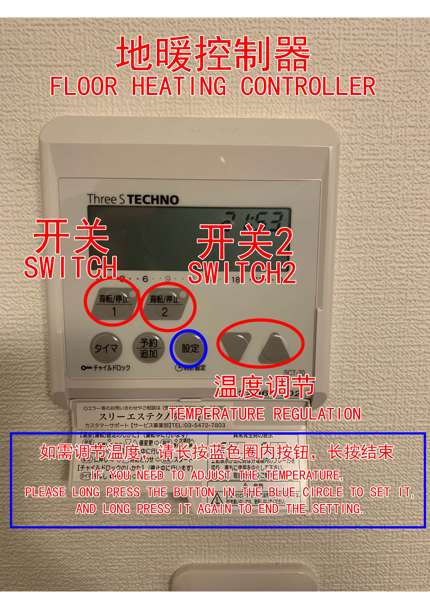
Switch buttons & temperature controls
Press “運転/停止1” or “運転/停止2” to turn ON floor heating.
To adjust temperature:
Press & hold the “設定” button (blue circle) to enter setting mode.
Use ▲ / ▼ buttons to adjust the temperature.
Press & hold “設定” button again to save.
Heating may take some time to warm up. Please turn OFF when not needed.
Gas Stove & Small Oven Instructions
Please follow these steps carefully when using the stove. ⚠ Always turn off the flame after use. Never leave the stove
unattended.
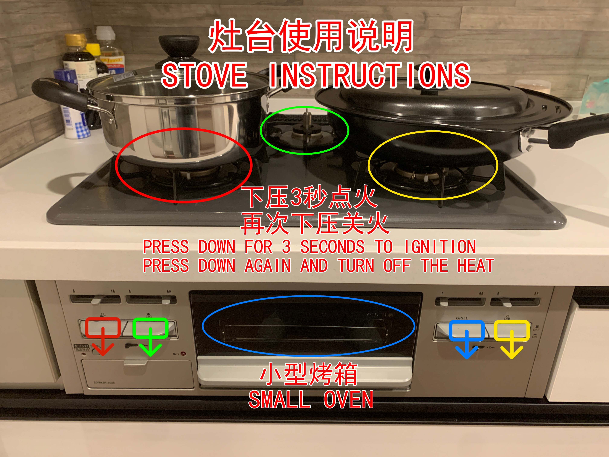
Press & hold to ignite, press again to turn off
Place your pot or pan securely on the burner.
Press the control knob down and hold for about 3 seconds to ignite.
Left burner → left knob
Right burner → right knob
Adjust flame strength by rotating the knob.
To turn off the heat, press the knob down again until the flame goes out.
🔥 *If ignition does not work, release and try again.*
Please ensure there is no water or oil around the burner.
Small Oven / Grill
Pull the tray gently to open
Pull the oven tray forward gently.
Place food inside (please use foil if needed).
Use the oven control knob (center panel) to heat.
Press and hold the knob (same as stove) for ignition.
Keep watching while cooking — it heats quickly.
Press the knob again to turn off.
⚠ Use with caution — this small oven heats very fast and may burn food quickly.
Recommended time: 3–5 min with constant monitoring.
💡 After cooking:
– Turn off all flames
– Ensure no gas smell remains
– Clean any spills after the stove cools down
Dishwasher
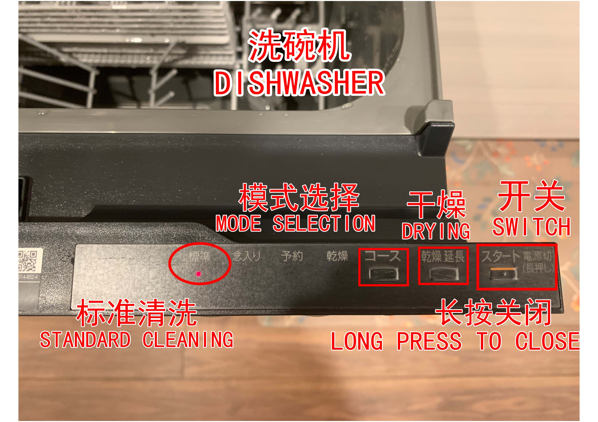
Mode / Drying / Start (long press)
Open the dishwasher and place the dishes inside.
*Please remove large food residues before loading.*
Press & hold the power button (スタート / 電源切) to turn on.
*It requires a long press to activate.*
Select a mode using the “コース” (Mode) button:
標準 — Standard cleaning (recommended)
念入り — Intensive cleaning
予約 — Timer / Delay
乾燥 — Drying only
Press the Start button to begin the washing cycle.
After washing, the dishwasher will stop automatically.
You may open the door slightly to release steam and help drying.
🧽 Detergent: If detergent is needed, please add it to the dispenser tray.
Many dishes clean well with the standard cycle.
⚠ Please do not wash wooden utensils, kitchen knives, or delicate items.
💡 For best results, avoid overloading and place bowls facing downward.
Water Heater Panel
⚠️ Do NOT turn OFF the water heater switch — it must remain
ON to supply hot water and heating.
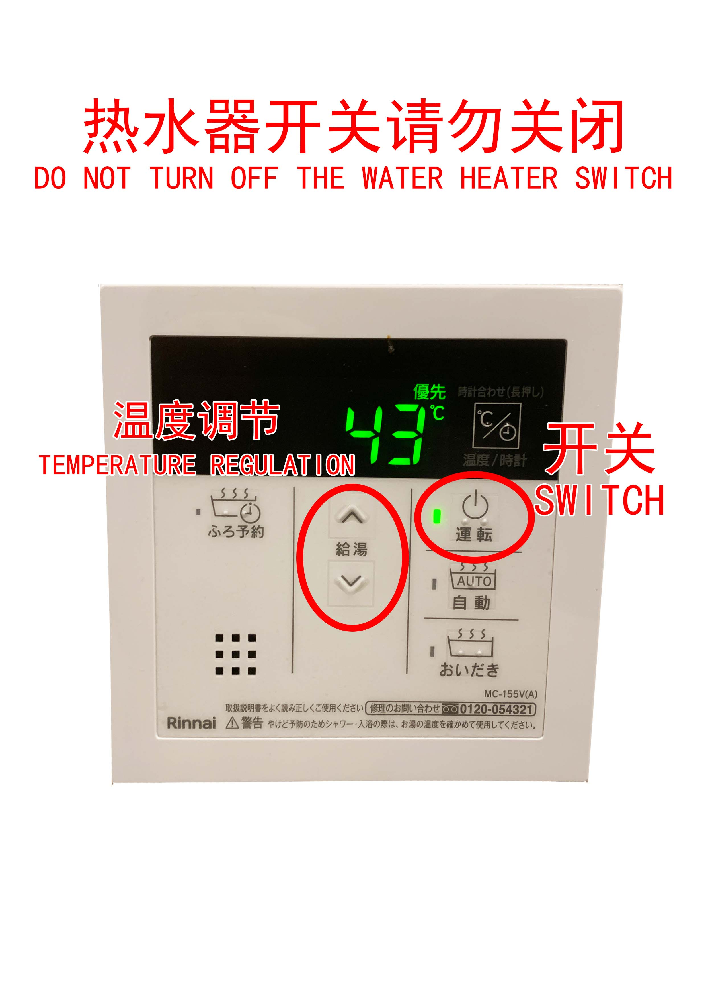
Main controls: Power & Temperature
Power Switch (運転)
This button turns the water heater ON / OFF.
⚠ Please do not turn OFF the water heater during your stay.
If it is off, there will be no hot water.
Temperature Adjustment (給湯 温度調節)
Use the ▲ / ▼ buttons to change the hot-water temperature.
Recommended setting: 40–43 °C for showers and baths.
💡 If the water feels too hot or too cold, please adjust here rather than at the shower tap.
② Water Heater (Hot Water for Shower / Bath)
⚠️ Please DO NOT turn OFF the main power switch (運転).
Main control panel (bathroom)
To use hot water, ensure the green light next to “運転 (Power)” is ON.
Adjust the temperature by pressing:
▲ Up to increase temperature
▼ Down to decrease
Recommended temperature: 40–43 °C.
If the green light is OFF, please press “運転” to turn it on.
💡 Tips:
– Always check the temperature before showering.
– If no hot water comes out, check that the green light is ON.
– Please turn off floor heating after use to save energy.
Shower / Bathroom Faucet
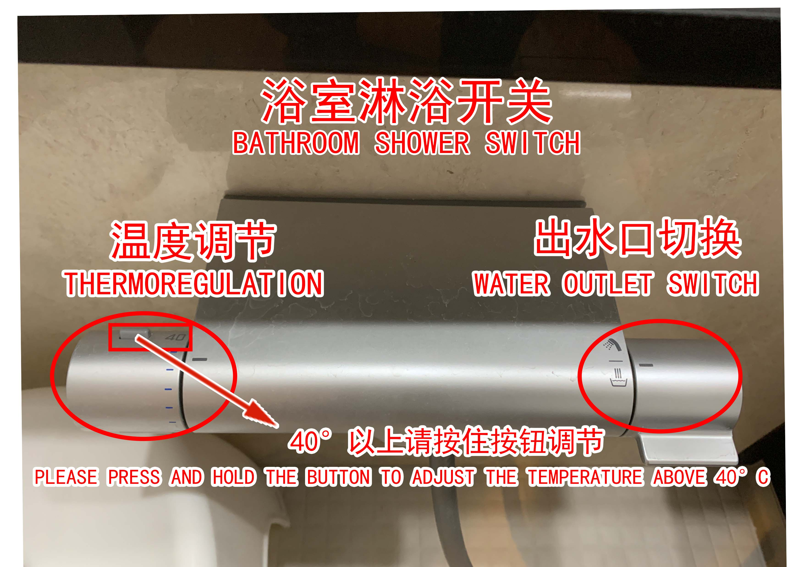
Temperature & water outlet controls
Turn the RIGHT knob to choose:
🛁 Bathwater (for filling the tub)
🚿 Shower (for normal shower use)
Turn the LEFT knob to adjust water temperature.
IMPORTANT:
To set the temperature above 40 °C, you must:
Press and hold the small safety button on the knob
While holding, turn the knob further
💡 Tip: The recommended shower temperature is 38–41 °C.
⚠ Be careful when adjusting above 40 °C, as water may become very hot.
Smart Toilet
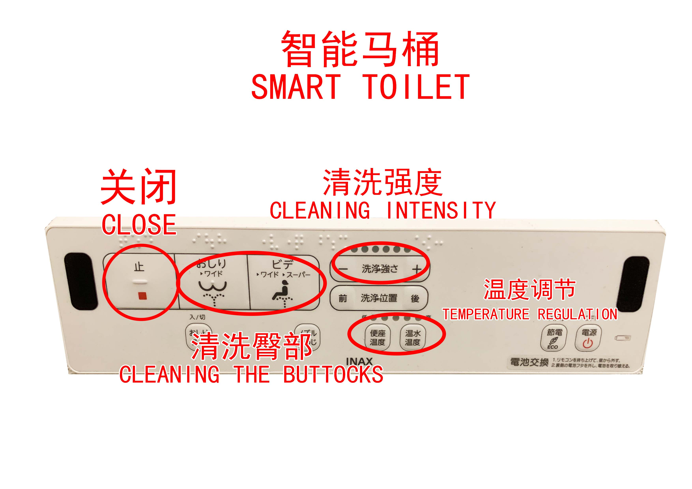
Cleaning / Stop / Water Temp / Intensity
Stop (关闭 / STOP)
Press the 止 button to stop all functions.
Washing the buttocks (清洗臀部)
Press the おしり button.
*The nozzle will spray warm water for cleaning.*
Adjust cleaning intensity (清洗强度)
Use the ＋ / − buttons to make the spray stronger or softer.
Adjust water temperature (温度调节)
Press the 温水温度 button to change the water temperature.
Adjust seat temperature (座圈温度)
Press the 便座温度 button to warm or cool the toilet seat.
💡 The toilet will automatically stop after a short time.
⚠ Please do not stand on the toilet seat.
Lighting Remote Controls
Some rooms have different lighting remotes, but the basic usage is the same:
Power ON/OFF, Full brightness, Brighten, Darken.
Room 1 – Lighting Remote
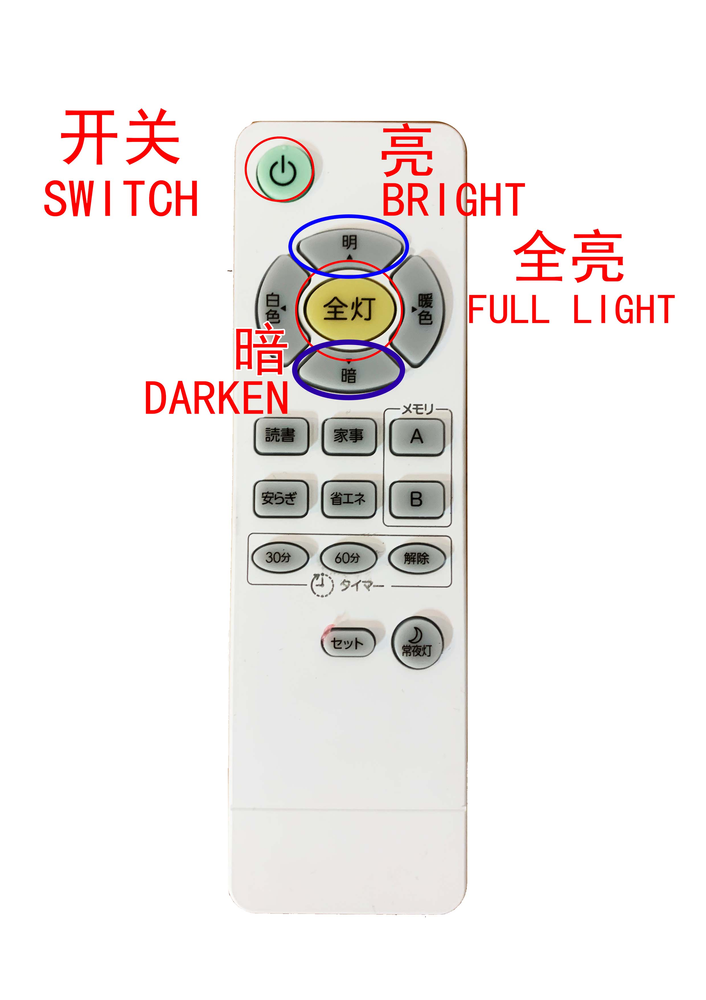
Power / Full light / Bright / Dark
Power – Press the green power button to turn the light ON/OFF.
Full light (全灯) – Press the center 全灯 button for full brightness.
Brighten (明) – Press the upper button to make the room brighter.
Darken (暗) – Press the lower button to dim the light.
Room 2 – Lighting Remote (TOSHIBA)
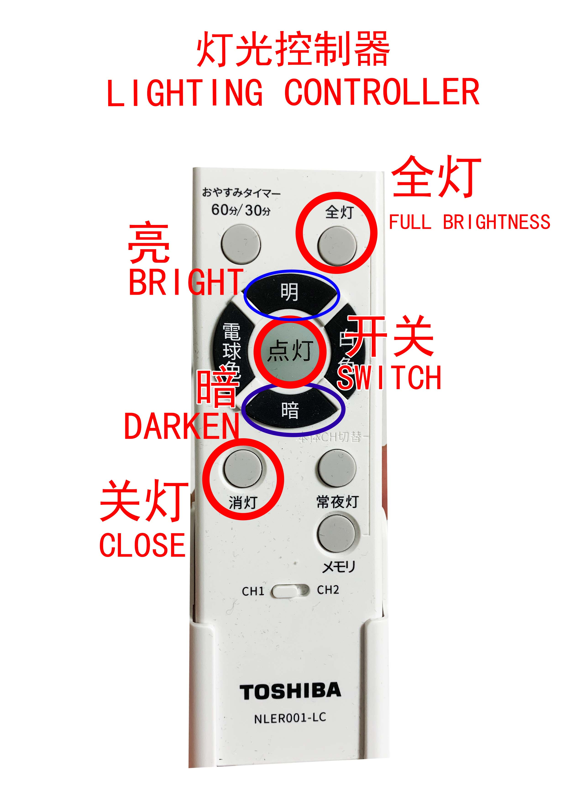
Full light / Dimmer / Off
Power ON (点灯) – Press the center 点灯 button.
Full brightness (全灯) – Press the top 全灯 button.
Brighten (明) – Press the upper part of the ring (明).
Darken (暗) – Press the lower part of the ring (暗).
Power OFF (消灯) – Press the 消灯 button to turn the light off.
Room 3 – Lighting Remote (IRIS OHYAMA)
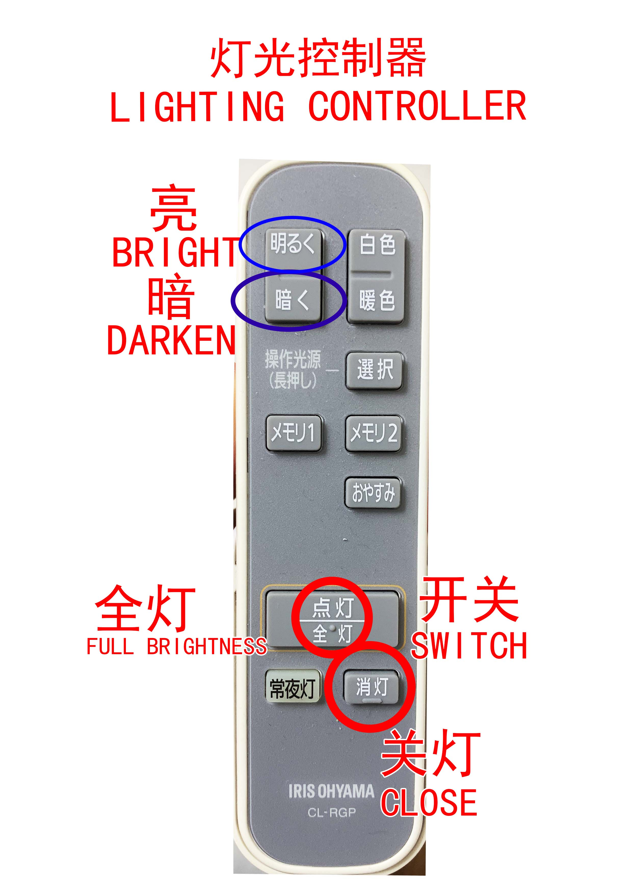
Full light / Dimmer / Off
Power ON / Full brightness (点灯・全灯) – Press the large button labeled
点灯 / 全灯.
Brighten (明るく) – Press the 明るく button.
Darken (暗く) – Press the 暗く button.
Power OFF (消灯) – Press the 消灯 button to switch the light off.
💡 Tip: If a light does not respond, please point the remote directly at the ceiling light and try again.
Washbasin Amenities
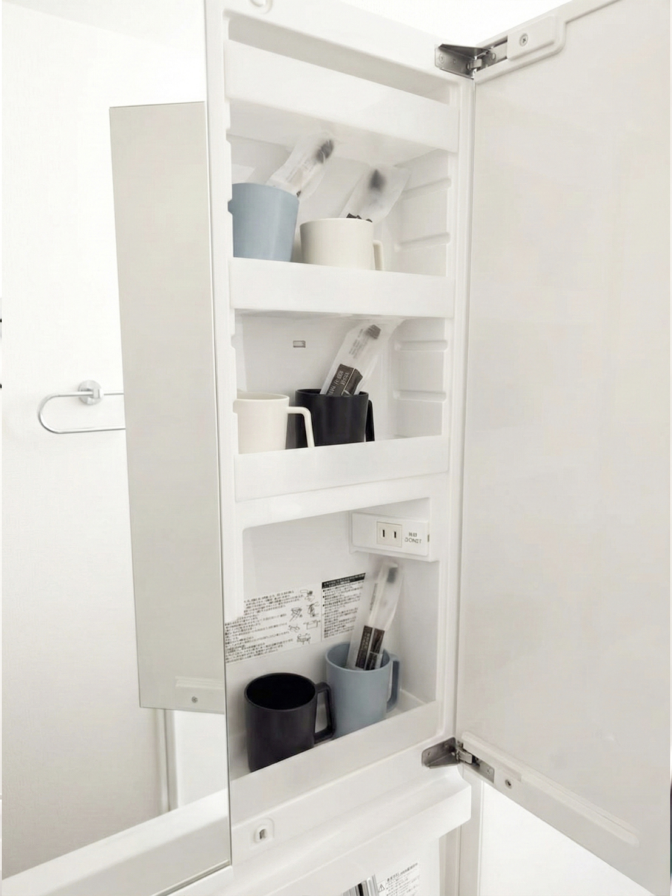
Toothbrushes & cups are prepared inside the mirror cabinet
We have prepared clean toothbrush sets and cups inside the mirror
cabinet
at the washbasin.
Please open the cabinet door to access them.
1 set per guest
Located on each shelf inside the mirror cabinet
Free to use during your stay
💡 Please feel free to take the toothbrushes with you after use.
House Rules
Garbage disposal rules
We understand that garbage rules in Japan can be confusing, so we made it simple. Separate the garbage into
2 categories using different plastic bags, then put them in the silver dust box in the
parking lot as below.
Burnable Garbage
Kitchen waste
Paper scraps
Clothing, etc.
Recyclable Garbage
Plastic bottles
Container jars & cans
Aerosol spray cans, etc.
White dust box in the parking lot
Garbage disposal II
Except for the rules above, please do not leave used luggage or any big items in the
house. If you leave items that are not permitted, we may ask you to pay for the costs incurred.
Quiet time: 9pm–8am
Please respect our residential community. Between 9pm and 8am, keep noise to a minimum.
Please take off your shoes
Please do not wear your shoes inside the property.
Smoking rules
This is a non‑smoking home — no smoking or vaping inside the house.
A designated smoking area is available on the terrace on the 4th floor. Do not smoke on
the
street — it is strictly prohibited in Tokyo.
Parking is not available on-site.
If you are arriving by car, please use one of the nearby coin-operated parking lots.
security
For security reasons, a surveillance camera is installed at the entrance, as required by local government
guidance.
Pets
We love animals, but this home is pet‑free due to allergies.
Additional guests
Please do not bring additional guests. Exceeding the maximum occupancy is not permitted.
Breakages
If you break anything, please tell us immediately. Minor issues are usually not charged. For larger issues
(e.g., TV screen), we will agree the cost with you before checkout to avoid surprises.
Written exceptions
Any exceptions to these rules must be approved in advance. Thank you!
What to do in an Emergency
For emergency services (ambulance, police, fire), please make the call immediately. State your location as
shown on the front page of this guidebook.
Police: 110
Ambulance: 119
Fire: 119
Neighborhood Guide
Bell Sage Mejiro Apartment Area — convenience store nearby
2-18-20 Takada, Toshima-ku, Tokyo 171-0033
Map
Maruetsu Petit Zoshigaya 2-chome — supermarket
2-3-3 Zoshigaya, Toshima-ku
Map
Yamataro Onigiri & Pork Soup — casual Japanese eatery
2-10-7 Zoshigaya, Toshima-ku, Tokyo 171-0032
Map
Mo’s Cafe — cozy local cafe
2-5-18 Zoshigaya, Toshima-ku, Tokyo 171-0032
Map
* All locations are approximately within a 10-minute walk.
Access to Major Sightseeing Spots
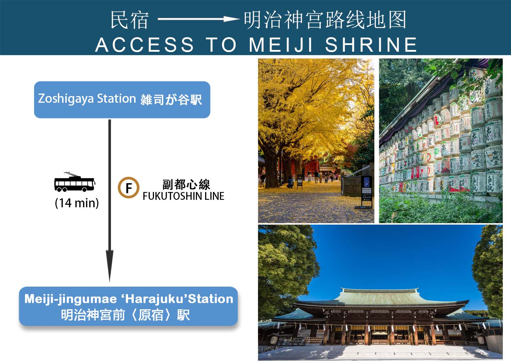
Meiji Shrine / Harajuku
From Zoshigaya Station on the Fukutoshin Line to
Meiji-jingumae ‘Harajuku’ Station – about 14 min, no transfer.
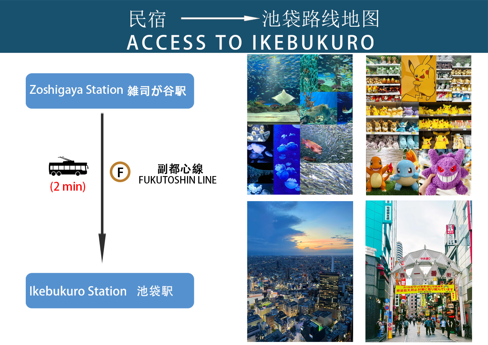
Ikebukuro
From Zoshigaya Station on the Fukutoshin Line to
Ikebukuro Station – about 2 min, no transfer.
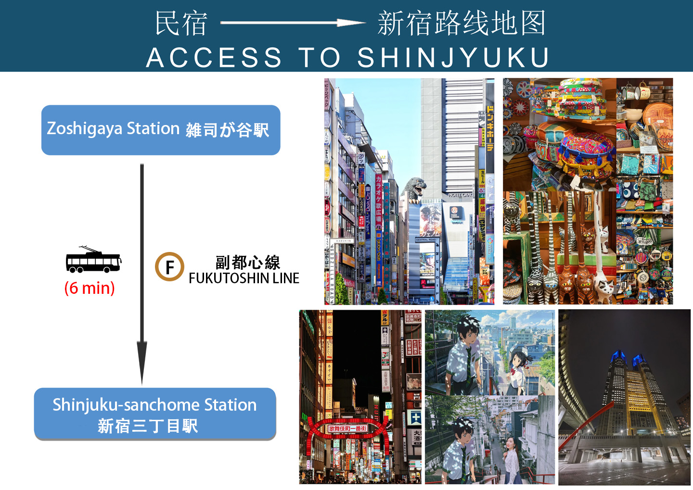
Shinjuku
Fukutoshin Line from Zoshigaya to
Shinjuku-sanchome Station – about 6 min, no transfer.
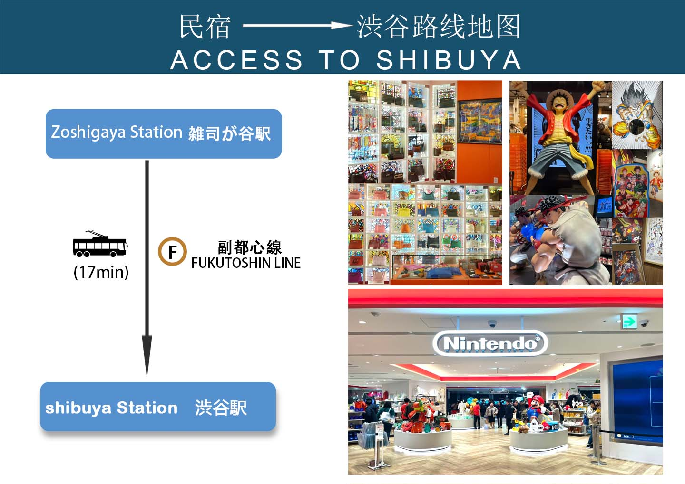
Shibuya
Fukutoshin Line from Zoshigaya to
Shibuya Station – about 17 min, no transfer.
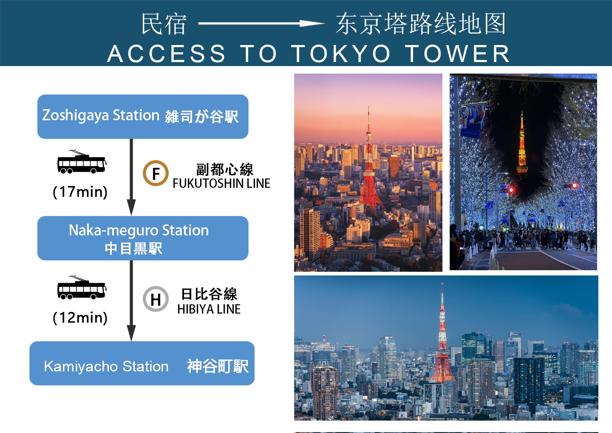
Tokyo Tower
Fukutoshin Line from Zoshigaya to
Naka-meguro, then Hibiya Line to
Kamiyacho Station – about 30 min.
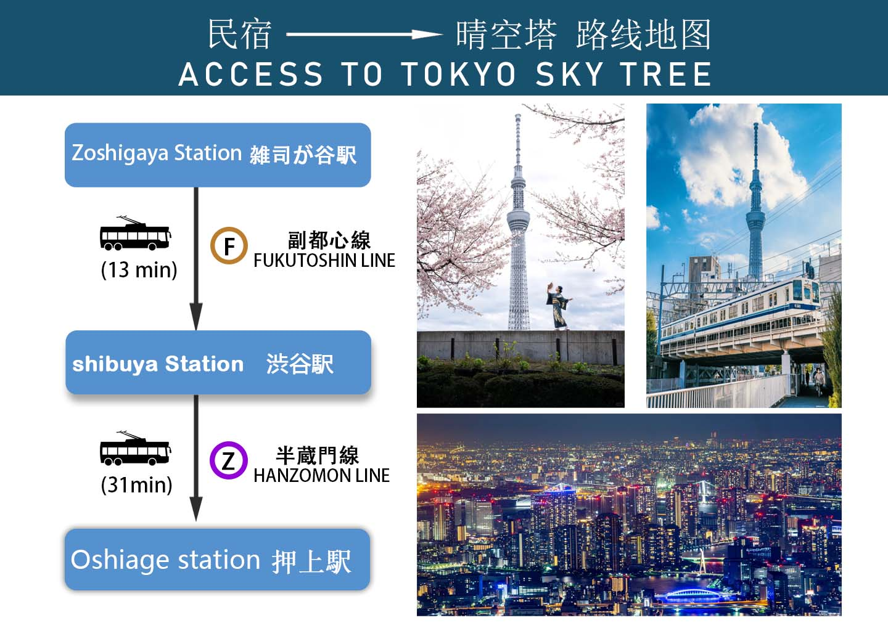
Tokyo Skytree (Oshiage)
Fukutoshin Line from Zoshigaya to
Shibuya, then Hanzomon Line to
Oshiage Station – about 45 min.
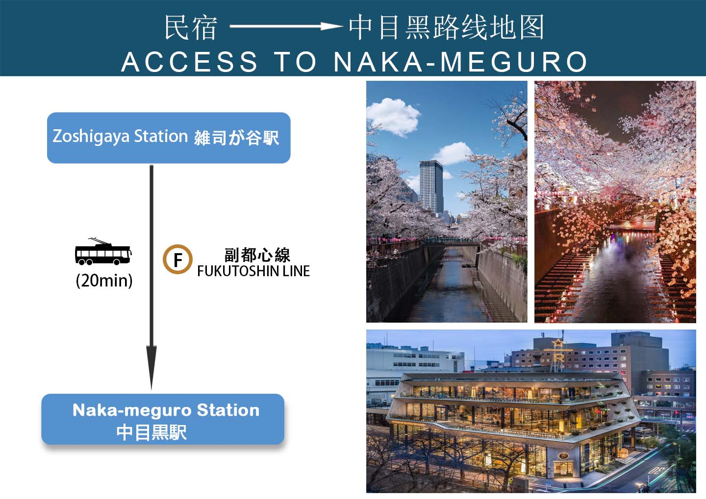
Naka-meguro
Fukutoshin Line from Zoshigaya Station to
Naka-meguro Station – about 20 min.
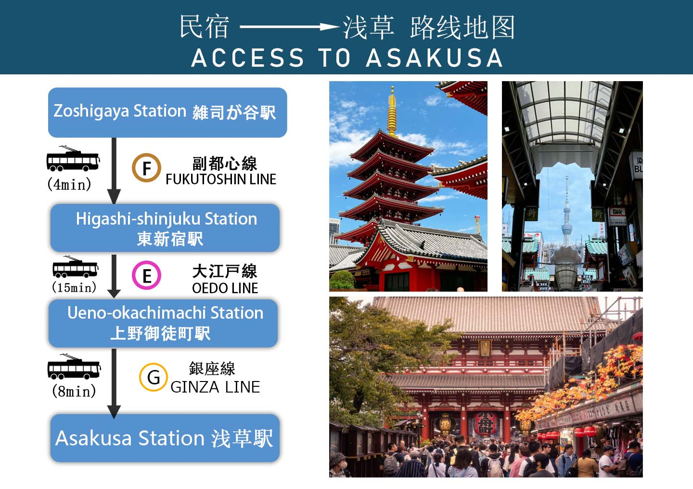
Asakusa / Senso-ji Temple
Fukutoshin Line from Zoshigaya to
Higashi-Shinjuku, Oedo Line to
Ueno-okachimachi, then Ginza Line to
Asakusa Station – around 30 min total.
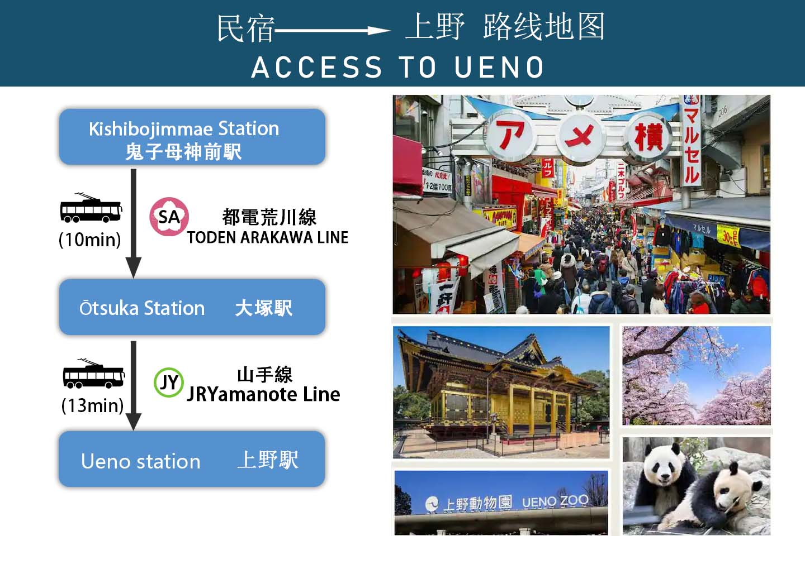
Ueno / Ueno Zoo & Ameyoko
Toden Arakawa Line from Kishibojimmae to
Otsuka, then JR Yamanote Line to
Ueno Station – about 25 min.
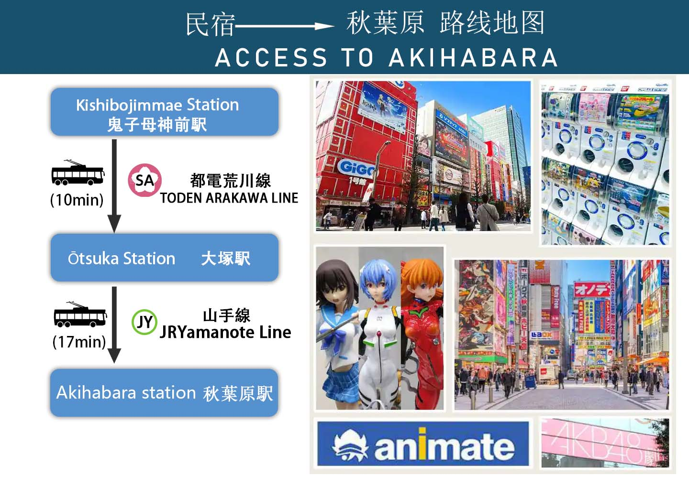
Akihabara
Toden Arakawa Line from Kishibojimmae to
Otsuka, then JR Yamanote Line to
Akihabara Station – about 30 min.
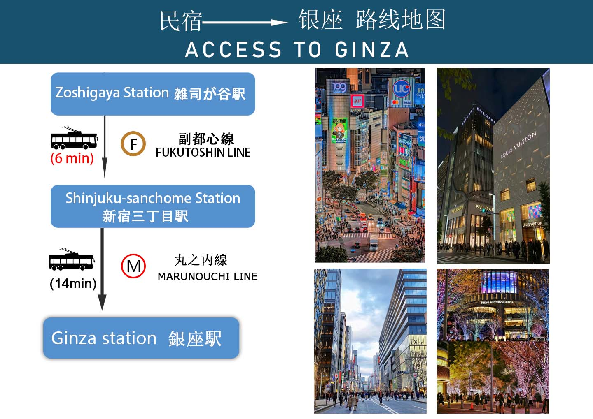
Ginza
Fukutoshin Line from Zoshigaya to
Shinjuku-sanchome, then Marunouchi Line to
Ginza Station – about 20 min.
* Travel times are approximate and may vary depending on time of day and transfer conditions.
Contact & Support
If you have any inquiries during your stay, please contact us via booking app message
Emergency: Fire, Ambulance, or Police — Dial 110 / 119